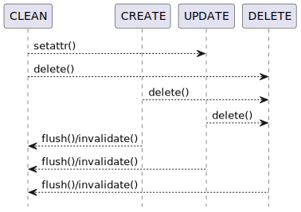

Design¶
Entities¶
Entity is the base class representing notes, attributes, and branches. It essentially maps to a record in Trilium’s database.

Entity state machine¶
The entity state (Entity.state) is automatically managed based on the user’s actions. The following illustrates the possible state transitions.

Flush procedure¶
The following captures the mechanism to commit changes to Trilium, beginning with Session.flush.
It’s recommended to right click and “Open image in new tab”.
![@startuml
hide footbox
actor user as user
participant "session: Session" as session
participant "session._cache: Cache" as cache
participant "entity: Entity" as entity
participant "entity._model: Model" as model
participant "entity._model._driver: Driver" as driver
database "ETAPI" as etapi
user->session ++: session.flush(entities: Iterable[Entity] = None)
session->cache ++: self._cache.flush(entities)
cache->cache: Validate entities
cache->cache: Collect and validate dependencies
cache->cache: Create and populate topological sorter
loop while sorter.is_active()
loop for entity in sorter.get_ready()
alt entity.state is not State.CLEAN
cache->entity ++: entity._flush(sorter)
alt Model is changed
entity->model ++: self._model.flush(sorter)
alt entity.state is State.CREATE
model->driver ++: self._driver.flush_create(sorter)
alt
driver->etapi: POST /create-note
else
driver->etapi: POST /attributes
else
driver->etapi: POST /branches
end
return
else entity.state is State.UPDATE
model->driver ++: self._driver.flush_update(sorter)
alt
driver->etapi: PATCH /notes/{noteId}
else
driver->etapi: PATCH /attributes/{attributeId}
else
driver->etapi: PATCH /branches/{branchId}
end
return
else entity.state is State.DELETE
model->driver ++: self._driver.flush_delete(sorter)
alt
driver->etapi: DELETE /notes/{noteId}
else
driver->etapi: DELETE /attributes/{attributeId}
else
driver->etapi: DELETE /branches/{branchId}
end
return
end
return
end
alt entity.state is not State.DELETE
loop for ext in entity._model._extensions
alt ext._is_changed
entity->model ++: ext._flush()
note right: Note content implemented as model extension and flushed separately
model->driver ++: ext._driver.flush()
driver->etapi: PUT /notes/{noteId}/content
return
return
end
end
end
return
end
end
end
return
return
@enduml](../../_images/plantuml-731d95267ea3fec773dd0edcd9a218962fede949.svg)